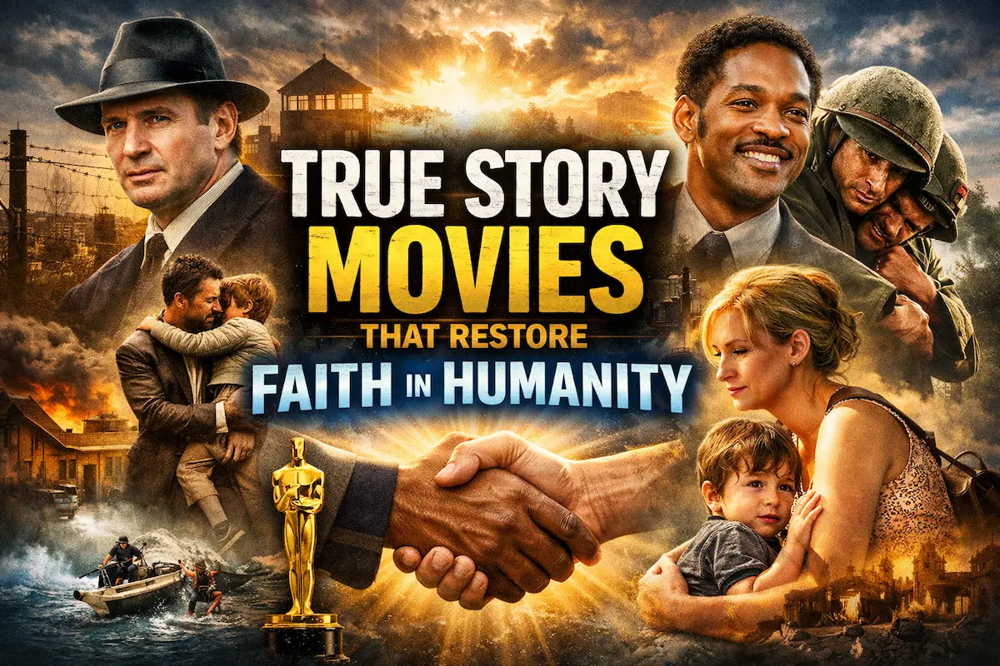

Top 10 Naturist Movies That Celebrate Life, Nature, and Human Freedom
Introduction: When Cinema Learned to Feel the Earth
Before cinema had sound, before it learned to speak in dialogues or sing in background scores, storytelling lived on open stages—through plays, myths, and oral traditions. Actors performed under the sky, bodies visible, emotions raw. Clothing was never the point, expression was.
As cinema evolved, it inherited not only storytelling techniques but also society’s growing discomfort with the human body. Clothes became symbols of civilization, while nudity was pushed into taboo corners. Yet, every once in a while, cinema dared to return to its roots—to nature, to simplicity, to the idea that the human body is not something to hide, but something that belongs to the world as naturally as trees, rivers, and sunlight.
Naturist cinema is not about shock or provocation. At its best, it is about innocence, survival, freedom, and truth. These films strip away excess—not just clothing, but ego, materialism, and social conditioning. They ask a simple question: Who are we when civilization falls silent?
Here are 10 films that genuinely promote naturism, either through sustained natural living, philosophical alignment, or emotional intimacy with nature—films that treat the body with dignity and the earth with reverence.
1. The Blue Lagoon (1980)
Click to watch the official trailer on YouTube
If naturist cinema had a cultural landmark, The Blue Lagoon would be it.
This film does not merely include nudity—it normalizes it through innocence.
Stranded on a tropical island from childhood, two young survivors grow up without societal rules, fashion norms, or shame. Clothing fades away not as rebellion, but as irrelevance. The human body becomes just another part of the environment, equal to sand and sea.
What makes The Blue Lagoon essential to naturist cinema is its emotional framing. Nudity is never aggressive or voyeuristic. It exists because nature demands simplicity. Civilization teaches shame; isolation teaches acceptance.
2. Walkabout (1971)
Click to watch the official trailer on YouTube
Often considered the most intellectually respected naturist film, Walkabout is deeply philosophical.
Two urban children are abandoned in the Australian outback and encounter an Aboriginal boy who lives in complete harmony with nature. His nudity is cultural, practical, and unremarkable—contrasted sharply against the children’s conditioned discomfort.
The film quietly exposes how modern society alienates us from our own bodies. Naturism here is not idealized—it is lived. The land, the body, and survival are inseparable.
Few films communicate the spiritual loneliness of civilization as powerfully as Walkabout.
3. Paradise (1982)
Click to watch the official trailer on YouTube
Often described as a spiritual cousin to The Blue Lagoon, Paradise revisits similar themes of youthful isolation and natural living.
While not as emotionally profound, the film continues the idea that freedom from society naturally leads to freedom from clothing. The body exists without meaning attached to it—neither sinful nor sacred, simply human.
The island setting reinforces naturism as a response to environment, not an ideology imposed by choice.
4. Return to the Blue Lagoon (1991)
Click to watch the official trailer on YouTube
Though critically weaker than its predecessor, this sequel remains thematically important.
It reinforces the central belief of naturist cinema:
When society disappears, shame disappears with it.
The characters inherit not just an island, but a worldview where nudity is inherited naturally—untainted by external judgment. The film’s value lies in its consistency: naturism is portrayed as normalcy, not novelty.
5. Clan of the Cave Bear (1986)
Click to watch the official trailer on YouTube
Set in prehistoric times, Clan of the Cave Bear explores naturism before civilization even existed.
Here, nudity is primal and necessary, shaped by climate, survival, and ritual. The human body is not individualized or sexualized—it is communal, functional, and symbolic.
This film reminds us that clothing is a cultural invention, not a biological need. Naturism, in this sense, is humanity’s original state.
6. Zabriskie Point (1970)
Click to watch the official trailer on YouTube
Naturism in Zabriskie Point is ideological.
Set against the backdrop of counterculture rebellion, the film uses nudity as a political statement—a rejection of capitalism, consumerism, and material excess. Bodies merge with desert landscapes, emphasizing humanity’s smallness against nature’s vastness.
This is naturism as protest: the idea that true freedom requires shedding artificial identities, including clothing.
7. Captain Fantastic (2016)
Click to watch the official trailer on YouTube
While not nude throughout, Captain Fantastic strongly promotes modern naturist philosophy.
A family lives isolated in forests, disconnected from consumer culture. Their relationship with their bodies, environment, and health reflects naturist values—natural living, physical honesty, and emotional transparency.
The film proves that naturism is not only about nudity—it is about rejecting artificial living.
8. The Emerald Forest (1985)
Click to watch the official trailer on YouTube
This film explores indigenous life in the Amazon rainforest, where nudity is cultural and unremarkable.
Western characters struggle with discomfort, while native tribes live freely, bodies aligned with nature. Naturism here is presented as wisdom, not backwardness.
The film critiques colonial perspectives that equate clothing with civilization, suggesting instead that harmony with nature is the truest progress.
9. Robinson Crusoe (Various Adaptations)
Click to watch the official trailer on YouTube
Across adaptations, the Robinson Crusoe story repeatedly reflects naturist themes.
Isolation forces the protagonist to abandon societal norms. Clothing deteriorates, priorities shift, and survival dictates simplicity. Though subtle, these films reinforce the naturist idea that nature reshapes identity.
Man does not dominate the island; he adapts to it.
10. Lord of the Flies (1963)
Click to watch the official trailer on YouTube
While darker in tone, Lord of the Flies offers an important naturist contrast.
As social order collapses, children abandon uniforms and rules. Bodies become painted, bare, and instinctive. Naturism here is not idealized—it is raw and uncomfortable.
The film suggests that removing civilization reveals both innocence and brutality, reminding us that naturism is not about perfection, but truth.
Conclusion
From tribal storytelling to global cinema, the evolution of movies mirrors humanity’s journey—toward complexity, and sometimes, away from truth. Naturist films stand quietly against this drift, reminding us that simplicity is not regression, but remembrance.
When cinema removes costumes, it often reveals character.
When it removes walls, it reveals nature.
And when it removes shame, it reveals humanity.
These ten films are not just movies.
They are cinematic returns to origin.
More from CineNostalgia
